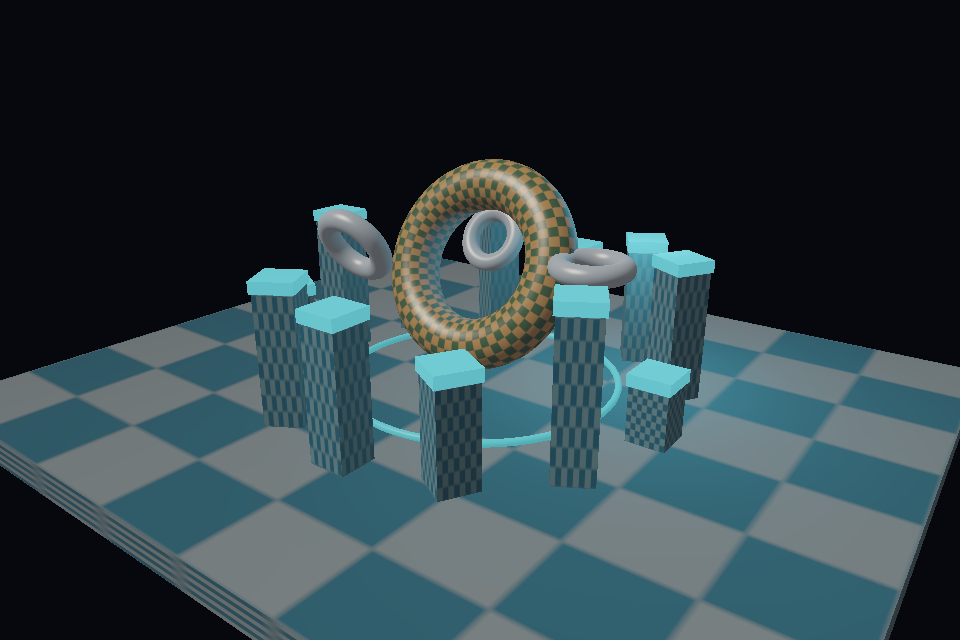

Programmable
Native Rust shaders power the scene. A validated SIR register machine executes vertex and fragment bytecode in the shader cube.
A graphics processor you can read, trace, and change.
Vertex shaders. Rasterization. Textures. Depth.
The hardware is a Rust program.

Watch the CPU-rendered animation →
These are pre-rendered images from SILICON's Rust pipeline. The browser displays the finished pixels.
Run a rotating 3D scene in a desktop window. Or render a PNG with no display. Rust 1.95.0; macOS and Linux targets.
git clone https://github.com/OthmaneBlial/silicon
cd silicon
cargo run --release -p silicon-cli -- run showcaseNative Rust shaders power the scene. A validated SIR register machine executes vertex and fragment bytecode in the shader cube.
Trace a pixel's barycentrics, varyings, depth and shader result. Capture owned resources and SIR commands, then replay identical pixels.
Fixed-point coverage, perspective-correct interpolation and mipmapped sampling. Scalar, NEON and parallel paths are checked against the same pixels.
SILICON currently runs its own graphics API. SPIR-V, Vulkan compatibility, compute and games are future work. SIMD accelerates coverage; shader execution remains scalar. Performance depends on scene, resolution and host load.
Read the current boundaries →